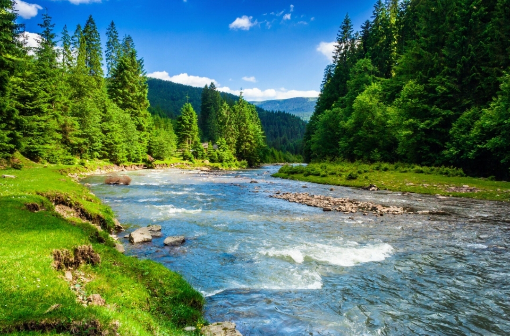
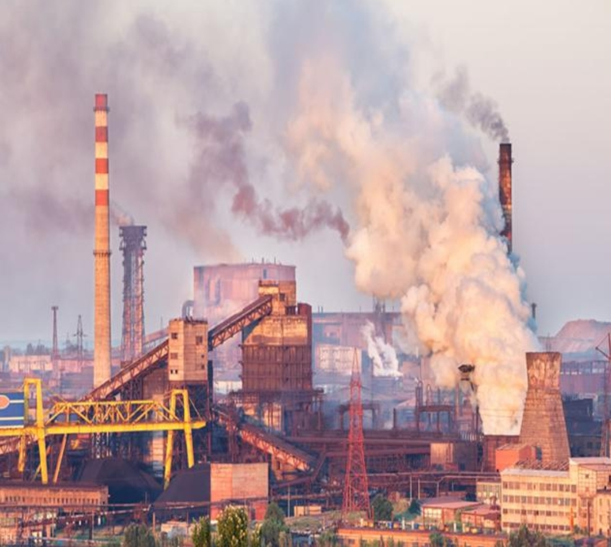
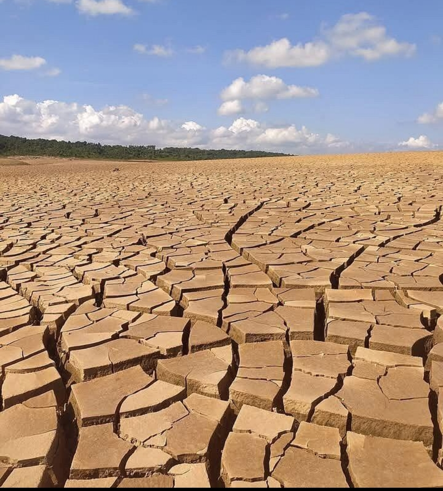
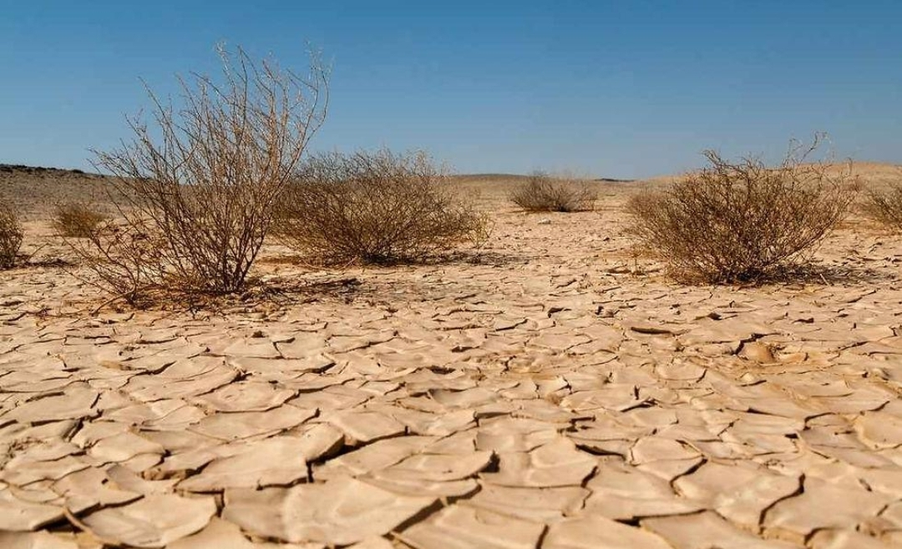
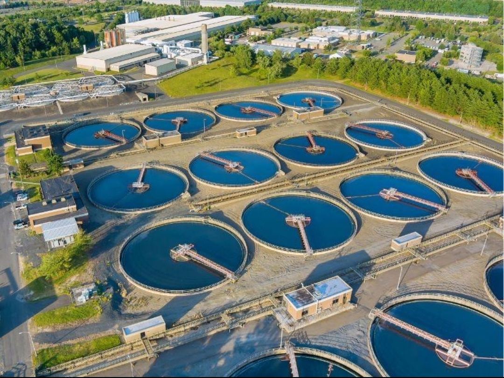
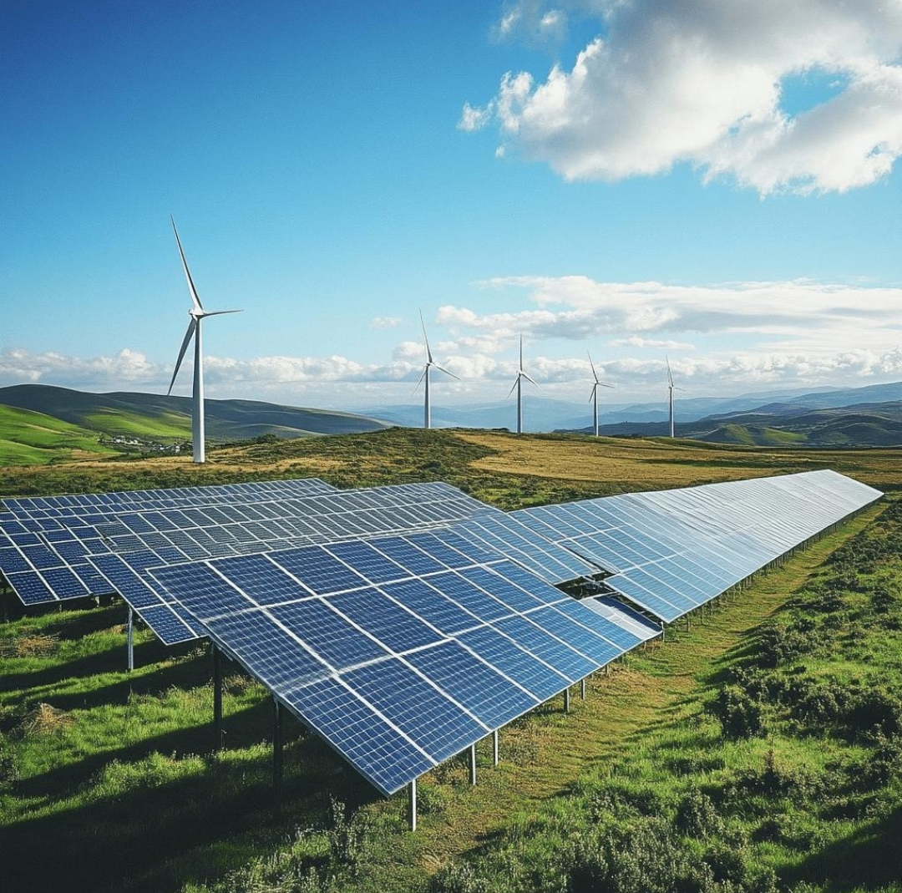
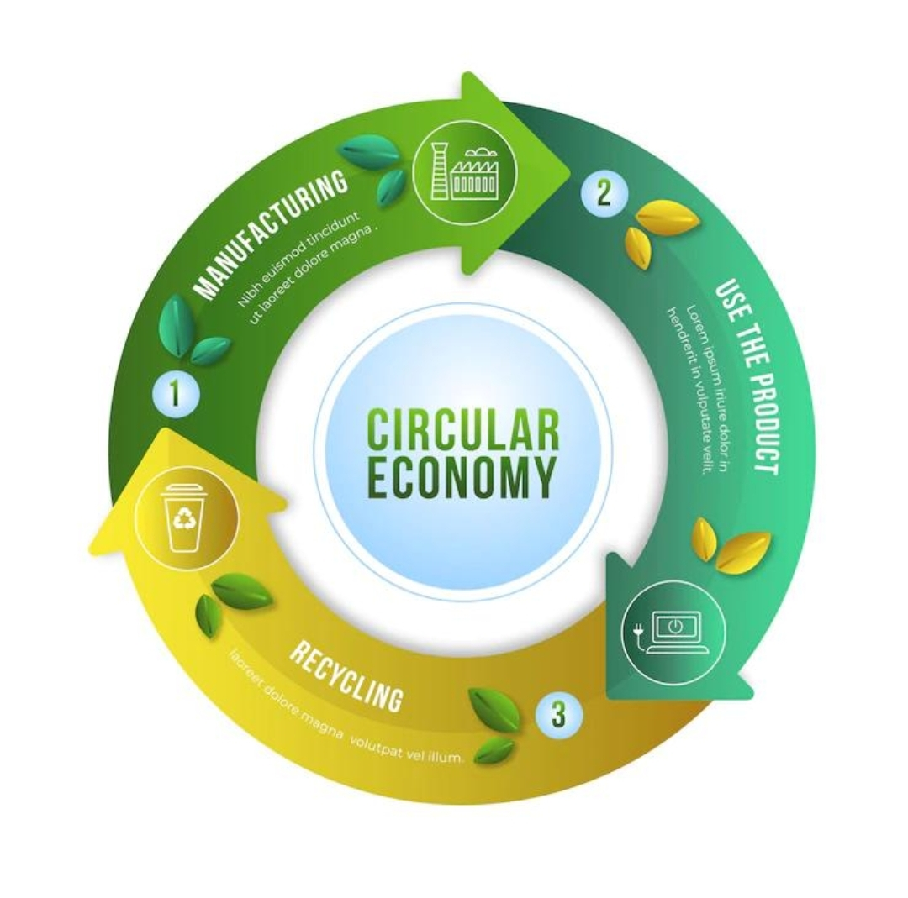
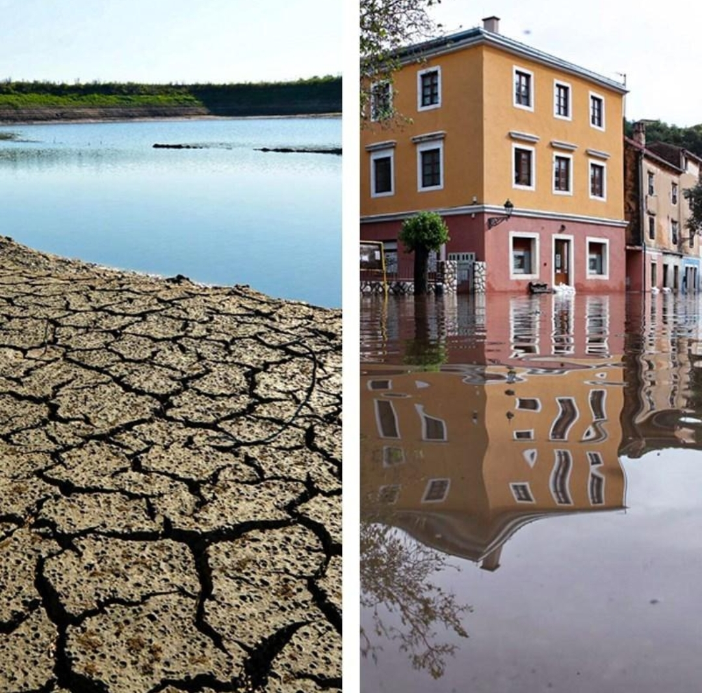

A temática socioambiental estuda a relação entre o ser humano, a sociedade e a natureza.Isso segnifica que os problemas socias,pois a poluição, o desmatamento e o consumo exagerado prejudicam a saúde, o trabalho e a qualidade de vida das pessoas.Por exemplo, uma indústria pode gerar empregos, mas se jogar resíduos no rio, prejudicará os animais e as famílias que dependem daquelas água.Por isso, precisamos buscar o desenvolvimento sustentável, que permite produzir e crescer sem destruir os os recursos naturais.Ao longo da história, movimentos e conferências mundiais passaram a discutir esses questões e a buscar soluções para garantir um futuro melhor para próximas gerações.
Questões socioambientais: È a relação entre sociedade e natureza.Uma depende da outra. "A poluição de um rio prejudica os peixes e as pessoas que utilizam sua água".

Problemas ambientais: São problemas causados ou agravados pelas atividades humanas, como poluição, desmatamento, exploração dos rescusos naturais e produção excessiva de lixo. "Uma fábrica que libera fumaça poluente prejudica a qualidade do ar".

Interdisciplinaridade: È a união de diferntes áreas do conhecimento para resolver problemas. "Engenheiros,químicos e biólogos trabalham juntos para diminuir a poluição de uma indústria".
Àreas degradadas: São locais que sofreram danos ambientais e precisam de recuperação. "Uma área de mineração que precisa de recuperação do solo e replantio de árvores".

Desertificação: È a degradação intensa do solo em região áridas, semiáridas e subúmidas secas, que pode torná-lo improdutivo. "Uma região perde a capacidade de produzir alimentos devido à degradação do solo".

Efluentes: São águas descartadas após o uso, que podem conter substâncias poluentes. "A água usada em uma indústria precisa ser tratada antes de ser descartada."

Bioenergia e energia renovável: São alternativas energéticas que podem reduzir a dependência dos combustíveis fósseis.A bioenergia utiliza matérias orgânicas; a energia solar utiliza a luz do sol e a eolíca utiliza o vento. "Uma empresa instala painéis solares para gerar eletricidade".

Economia verde: Busca produzir e gerar renda reduzindos os impactos ambientais. "Uma fabrica reutiliza água e diminui o despedício de materia prima".

Padrões de consumo São as formas como as pessoa compram, ultilizam e descartam produtos. "Comprar somente o necessário e reutilizar objetos ajuda a reduzir o lixo".
Mudanças climáticas: São alterações duradoras nos padrões do clima.As atividades humanas,especialmente a emissão de gases de efeito estufa, contribuem para o aquecimento global. "O aumento da tempratura pode intensificar ondas de calor e alguns eventos extremos".
